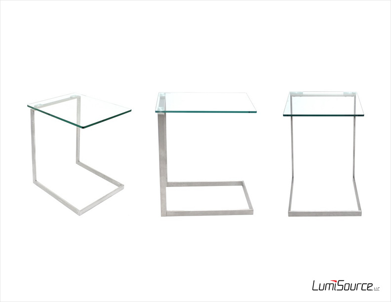
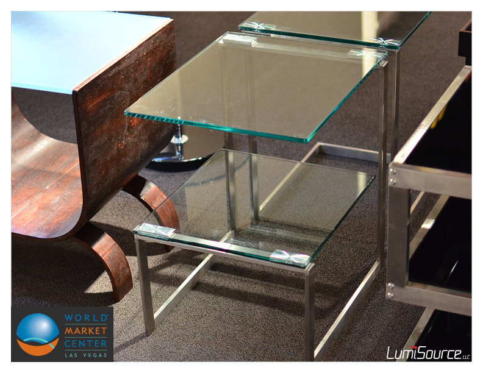

Zenn II
The Zenn II is a minimal side table concept that was designed to use parts of an existing product in order to create an entirely new product. It has since been renamed to '6G Side Table' and is now available on the market.The Process

Precedence
The original Zenn end table features a stainless steel frame and a single tempered glass surface.
Market Studies
Existing end tables of similar material and style were studied to assess typical features, materials, price points, etc., and to discover potential market opportunities. This was aimed at the $130 level, priced to compete with others while offering two surfaces and a minimal, architectural style.
Concept
The Zenn II adds an additional lower surface, delivering added value to the user while maintaining the minimal character of the original Zenn end table.
Manufacturing
The top glass surface, the steel piece that joins to it, and all hardware are identical to the original Zenn end table. Additional components require use of the same materials vendors and only minor changes to the manufacturing process in order to produce.
Alternative Designs
Several alternative finishing variations were considered, though the stainless steel and uncolored glass were chosen as they maintained the minimalist character of the structural form.
Prototyping
Custom parts were fabricated to the designed specifications and custom glass was prepared for the shorter lower shelf. All parts were assembled in-house.

On the Market
The built prototype was displayed at World Market Center in Las Vegas in July of 2013, where it was met with great reception. It has been on the market as of summer 2014.